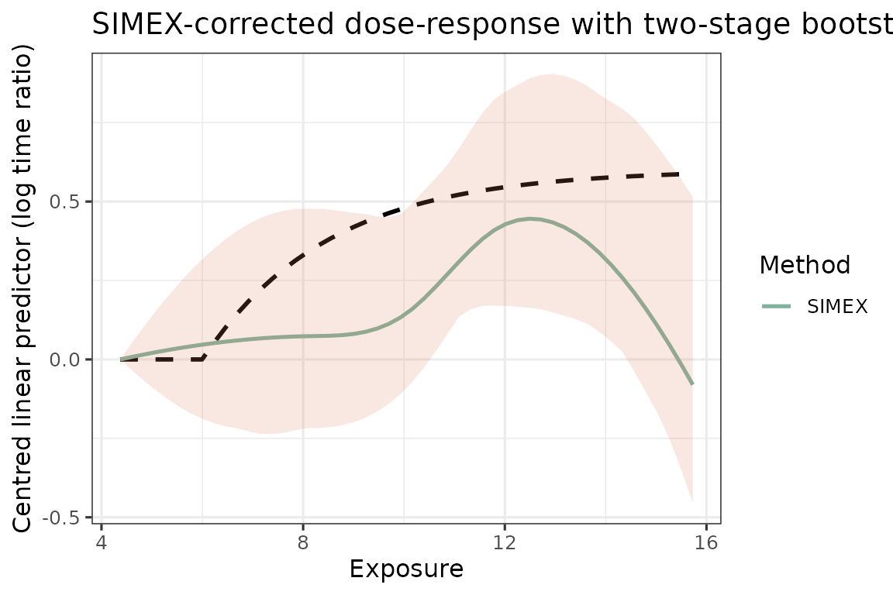

This vignette walks through one end-to-end fit on simulated data, taking under ten seconds on a laptop. The intended workflow on real data is the same: a small-validation Phase-1 fit, GLS-combined exposure on the main study, SIMEX correction, and a two-stage bootstrap for inference.
Simulate
generate_aft_data() returns a list with a main-study
survival data frame, a validation data frame, and the truth used to
generate them.
sim <- generate_aft_data(n = 1000, n_val = 300, seed = 1)
head(sim$survival, 3)
#> T_obs delta X_true W1 W2 W3 V1 V2 V3 V4
#> 1 262.2179 1 8.599207 11.44018 10.64514 7.314311 35.67483 25.56925 0 1
#> 2 706.4496 0 10.410639 10.06811 11.15140 7.532874 35.55966 20.38873 1 1
#> 3 259.9447 1 8.131478 10.02983 8.43953 9.722204 25.64611 38.09850 1 1Phase-1 calibration
cal <- fit_me_calibration(sim$validation)
cal$alpha1 # close to 1: surrogate is unbiased for truth
#> [1] 0.9591900 0.9580766 0.8901528
round(cal$Sigma_e, 2)
#> [,1] [,2] [,3]
#> [1,] 1.77 0.88 1.06
#> [2,] 0.88 2.28 1.05
#> [3,] 1.06 1.05 3.15gls_combine() collapses the three correlated surrogates
into a single calibrated exposure with conditional variance
sigma_w_sq.
W <- as.matrix(sim$survival[, cal$W_cols])
g <- gls_combine(W, cal)
dat <- sim$survival
dat$W_bar <- g$W_bar
round(g$sigma_w_sq, 3)
#> [1] 1.517Two-stage bootstrap interval
two_stage_bootstrap() runs the SIMEX pipeline inside an
outer loop that resamples both the validation and the main-study data,
so its interval propagates Phase-1 and Phase-2 sampling variation
jointly.
set.seed(1)
boot <- two_stage_bootstrap(
survival = sim$survival,
validation = sim$validation,
x_var = "X_true", # truth column for calibration
covariates = c("V1","V2","V3","V4"),
v_ref = c(V1 = 30, V2 = 30, V3 = 0, V4 = 0),
lambda = c(0.5, 1, 1.5, 2), B = 10, R = 30,
x_grid = x_grid,
verbose = FALSE
)Plot
truth <- f_true(x_grid) - f_true(x_grid[1])
fits <- list(SIMEX = boot$f_hat)
plot_curves(x_grid, truth, fits,
ci = list(lower = boot$lower, upper = boot$upper),
title = "SIMEX-corrected dose-response with two-stage bootstrap CI")